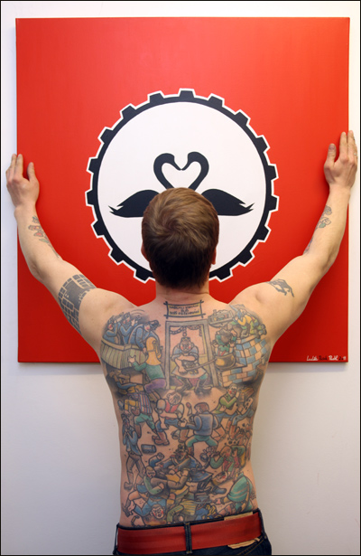

| |

With the brush, punk music and pilsner beer paint Ludek things he have
on the easel. From pop art styled posters to apocaliptic visions - art
means the absolute freedom for him. With the motto "I paint when I want,
with I want and what I want" he create live, provoking and actual
artworks.
Ludek Pesek Pachl in TATTOO SPIRIT - Life und Bodyart Magazin, Mai 2005
Private-Portraits the so-called personalities are often the salt in our
spirit-magazine-soup. Authentic stories of a lifetime are born onto paper
here. Not more and no less.
One of those stories is about Ludek Pesek (34y.o.). Native born and grown
up in Czechoslovakia, he lives in Berlin now as a painter, where his
art-objects stimulate the visitors of his exhibitions to perceive the
world through Ludeks eyes. And he has got tattoos, which are definetly
unique and the only.
Ludek Pesek does surround himself with art. He is a painter; he wears art
on his skin and the choice of his tattoo motifs were strongly influenced
by a great artist! (read more few lines below).
His own art, the paintings and collages, are composed of vigorous colours,
patterns and even structures. They directly lead you to a certain theme,
there are no misunderstandings: "I do want to provoke a little with my
arts! I want folks to have a click in their brain while looking at my
paintings." And it is true. Not with the very first look, you realize the
background of his paintings. You have to make an effort, to want to
understand to the paintings.
Normally, he uses present themes and problems in society as his initial
point and project them into his work. Usually, he transforms it into¨
Poster-Pop-Art and apocalyptic visions. Art means absolute freedom to
Ludek: I paint, when I want, with what I want and what I want!
The tattoo artist Mattes from the Berlin studio Tattoo Paradise needled
Ludek´s skin. The large tattoo on his back was inspired by the work of the
Czech artist
Josef Lada (1887-1958). His simple ingenious flat looking paintings have
expressively black contours and colours fill in the areas, without
modelling the outlines.
E.g. Lada illustrated The good soldier Schwejk and Tomcat Mikesch, what
made him to a kind of Andy Warhol in the Czech Republic. The idea of the
Pub-Brawl-Motif was wandering through Pesek´s mind for many years until he
found Mattes, to whom he had enough confidence to be capable of realizing
such a tattoo.
Mattes and Ludek´s relationship was never an ordinary one, where you get
your tattoo, pay and leave. They liked each other. At the end Ludek
produced a painting for Mattes and they exchanged art for art. The path,
Ludek has covered up to now was surely not free of stones. Long stays in
Italy and lots of work on very different projects never drew him away from
the roots of his homeland. After all, he came to Berlin in 1998, where he
still lives.
Judging from his paintings, he seems to find the energy and inspiration
there, for the creation of new artwork. On his homepage you can find a
collection of pictures of many of his paintings and collages. Most of them
can be purchased. Ludek Pesek´s paintings are not for the
"Fastfood-Art-Consumer". They demand for a thoughtful attention. You can
visit his recent exhibition "48 Stunden Neukölln" (48 hours Neukölln
Neukölln district in Berlin) till the 12.06.2005! In case you can´t, go
visit his homepage to get an impression about his work: www.rebelart.de.
(photo Robert Sedmik) |
|